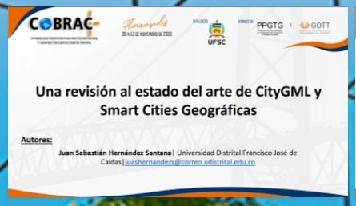
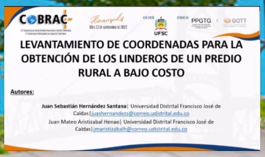
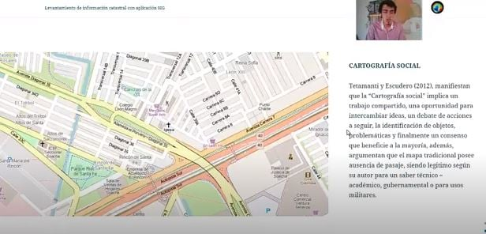
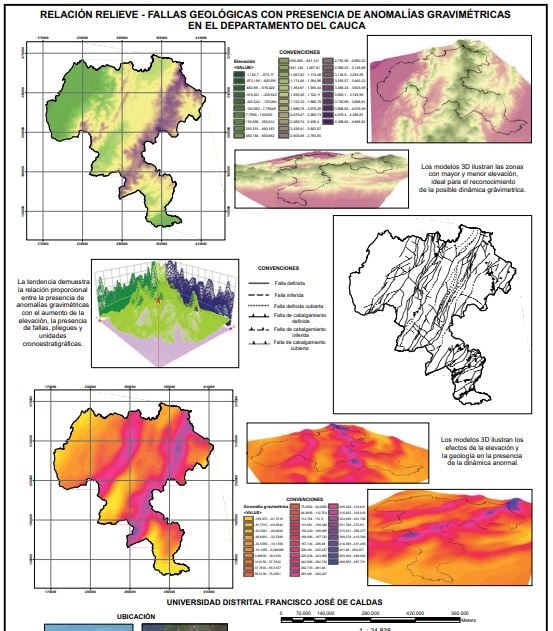
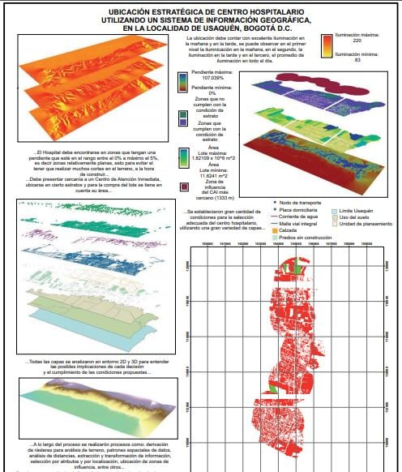
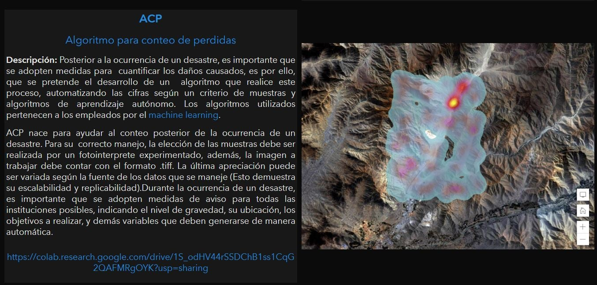
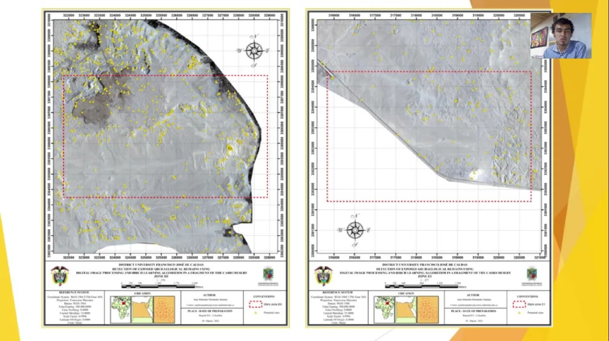
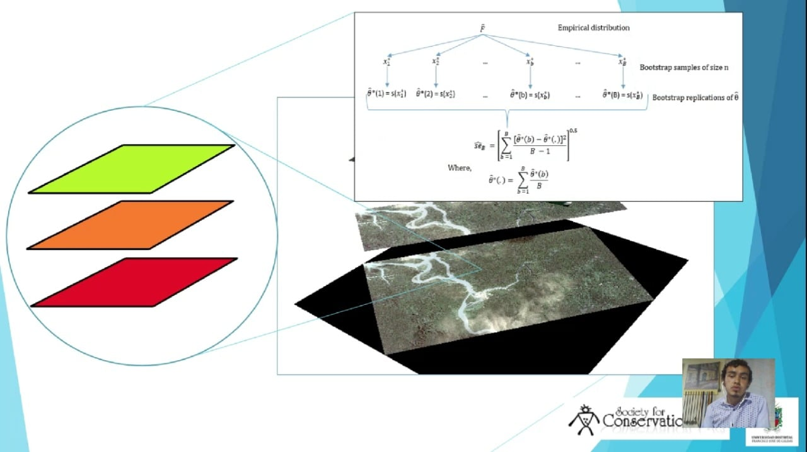

Events
In this space you will find the events resulting from the research carried out as a student.

0001
14° Congresso de Cadastro multifinalitário e Gestao Territorial (2020). A review of the state of the art of CityGML and geographic Smart Cities.
Event held in Brazil, focused on new technologies for Multipurpose Cadastre.

0002
14th Congress of Multifinalitarian Cadastre and Territorial Management (2020). Coordinate survey for obtaining the boundaries of a rural property at low cost.
Event held in Brazil, focused on new technologies for Multipurpose Cadastre.

0003
GISDay 2020 Discovering the territory through GIS (2020). Optimization of geospatial survey for Multipurpose Cadastre with GIS application.
Event held in Colombia, focused on new technologies in the GIS area.
>
0004
Map gallery Esri virtual user conference (2020).
Geological faults with presence of gravity anomalies in the Department of Cauca.
Strategic location of educational center in the locality of Puente Aranda.
Event held in Colombia, focused on new technologies in the GIS area of the ESRI company.

0005
XVII Annual Lecture Series. Department of Geography (2020).
Strategic location of hospital center using a Geographic Information System, in the Usaquén District, Bogotá D.C.

0006

Mapathon. A bet for Risk Management in the XXI century (2020).
Analysis of resilient infrastructure in Olaya Herrera, Nariño.

0007
Mapathon Peru 2021 (2021).
Winner - Generation of tools for the automation of processes related to risk management.

0008
24th annual SCGIS Conference (2021).
Detection of exposed archaeological remains using digital image processing and Birch learning algorithm in a fragment of the Cairo desert.
Identification of areas affected by flooding, through image processing and statistical simulation, at Municipal head of Bocas de Satinga, in the interval 2017 - 2020.